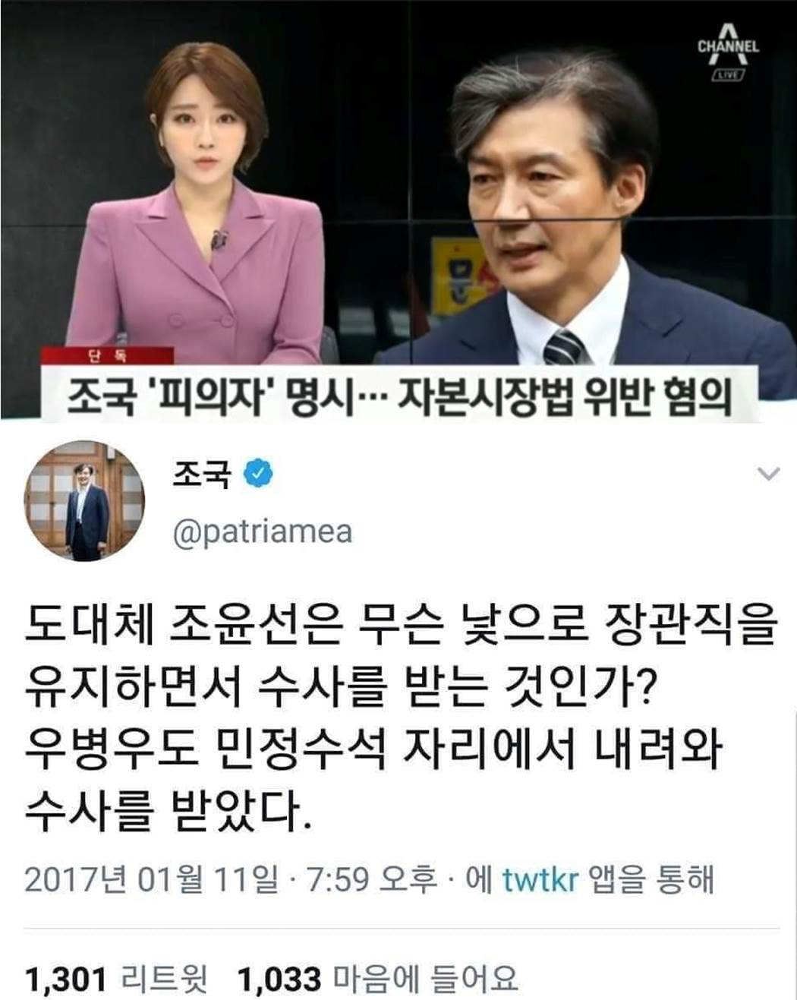
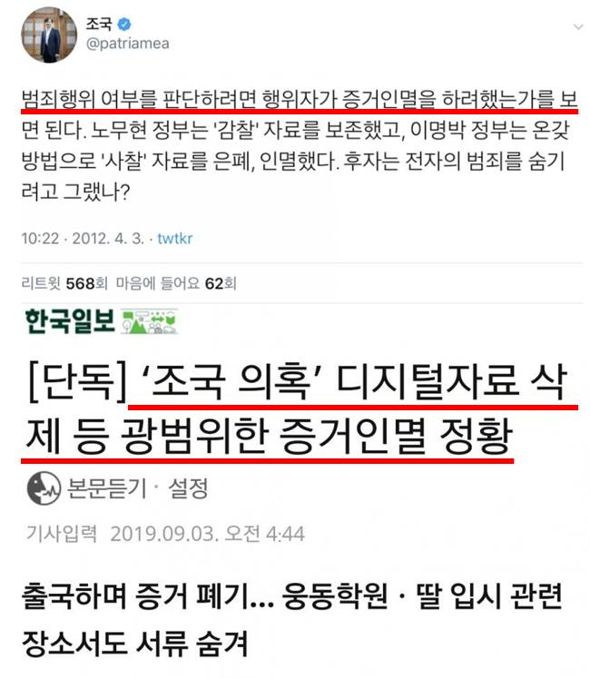
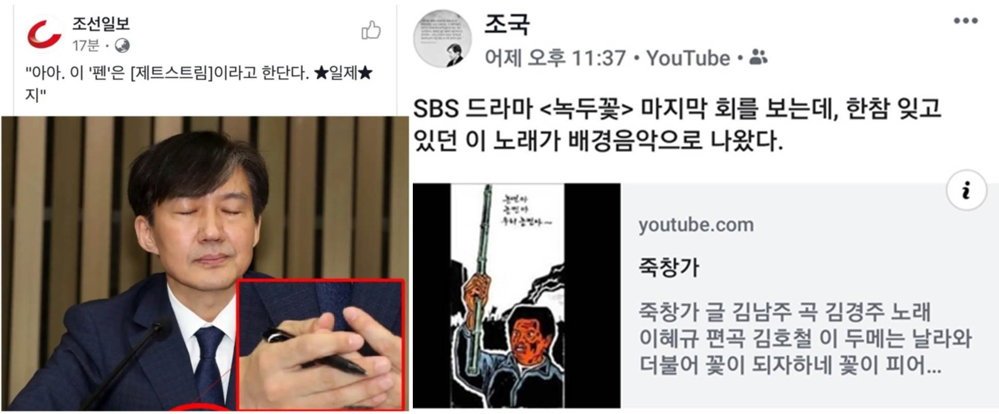
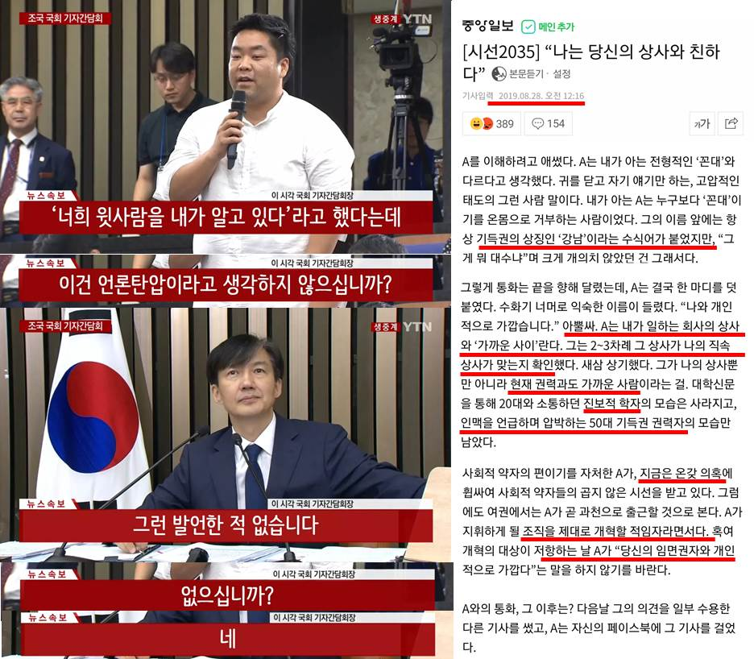
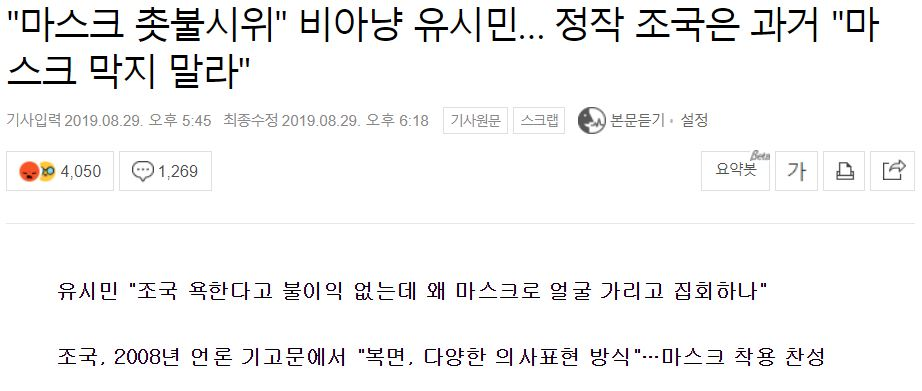
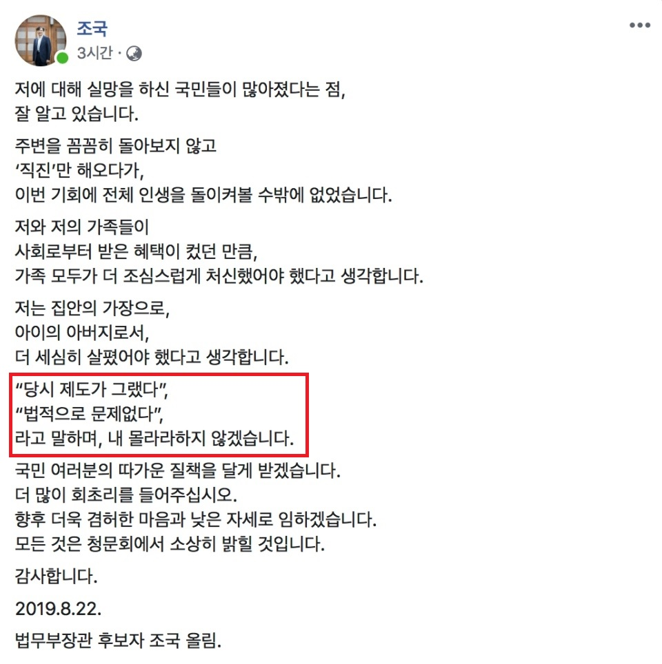

(PC) 각 사진에 마우스를 올리거나, (Mobile) 터치하시면
조로남불, 조적조의 상세 내용을 확인하실 수 있습니다!

9/9 장관이 된 오늘로, 이 트윗도 조로남불에 등재 조건을 갖추었다.
9/9 장관이 된 오늘로, 이 트윗도 조로남불에 등재 조건을 갖추었다.
도대체 조국은 무슨 낯으로 장관직을 유지하면서 수사를 받는 것인가? 피의자가.

2012 조국의 말에 따르면 광범위한 증거인멸을 시도한 2019 조국은 자신의 말에 따라 범죄자임을 스스로 인정했다.

반일 불매운동을 응원하며 본인 SNS에 죽창가를 공유했었으나, (그런데 정작 조국에게 죽창을 들자고 하면 지지자들은 21세기에 미개하게 죽창이 뭐냐고 지지자들도 조로남불...)
반일 불매운동을 응원하며 본인 SNS에 죽창가를 공유했었으나, (그런데 정작 조국에게 죽창을 들자고 하면 지지자들은 21세기에 미개하게 죽창이 뭐냐고 지지자들도 조로남불...)
기자 간담회에서는 일제 볼펜을 사용했다.

기자간담회에서 윗사람을 알고 있다는 말을 한 적이 없다고 했으나
기자간담회에서 윗사람을 알고 있다는 말을 한 적이 없다고 했으나
불과 일주일 전, 50대, 진보, 여권에서 조직을 개혁할 적임자라고 말하는 자, 현재 온갖 의혹 등 조국을 가리키는 수식어를 모두 가진 사람이
계속 그 상사가 직속 상사가 맞는지 확인하며 그 상사와 본인이 가까운 사이라고 압박했다.

방송에는 어떠한 규제나 간섭도 할 수 없다고, 수사 대상이라고 했지만, 9/2 기자 간담회에서는 민정 수석이 언론중재위원회도 거치지 않고 직접 언론사에 연락하는 것이 통상적인 것이라고 태세 전환
조국, 수사 대상이다!

본인들이 마스크 쓰는건 권력에 저항하는 것이 무서우니 당연, 너희가 마스크 쓰는건 학생증 확인했어도 순수한 학생인지 아닌지 모른다.
본인들이 마스크 쓰는건 권력에 저항하는 것이 무서우니 당연, 너희가 마스크 쓰는건 학생증 확인했어도 순수한 학생인지 아닌지 모른다.
이 유시민, 민주당 지지자들의 말에 과거 조국 교수의 한 마디."촛불민심을 조롱, 비방, 왜곡하는 자는 같은 운명에 처할 것이다."

불과 일주일 전, 본인 SNS에 당시 제도가 그랬다, 법적 문제 없다는 말 안하겠다고 올렸는데 기자 간담회에서 "당시엔 법적 문제가 없었다"라고 바로 조로남불 시전
9/2 기자 간담회에서 모든 질문에 모른다, 아니다로 답하며 조로남불 레전드 찍으신 조국 후보자

기자 간담회에서 본인은 법 전공이라 본인 딸의 이공계 논문은 잘 모른다고 했지만, 2012년에는 이공계 논문의 제1~3저자에 대해 친히 트윗까지 올렸다.

정작 9/2 조국 후보자의 몇 시간 전 일방적 통보로 열린 기자 간담회에서 조국 후보는 "모른다"와 "아니다"로 일관한다. 본인은 법 전공이라 그 외는 모른다며 딸의 논문 논란, 펀드 등 아무것도 모른다고 답변

정유라는 승마 국내 랭킹 1위, 아시안게임 금메달이라도 있었으나,
조국 자녀는 자기소개서 허위 스펙, 고2 문과생이 SCIE급 논문 1저자 등 권력 없이는 절대 불가능한 이력이 전부.


조국 후보자의 딸은 서울대 대학원에서 3학점 신청하고 장학금 2회 수령, 부산대 의전원에서 계속된 유급에도 다른 학생들이 1번 받을까 말까한 장학금 6회 수령


조국 후보자의 딸은 고2 문과생일 때 의대 석/박사들이 1년 이상, 270회 이상의 실험을 투자한 SCIE급 병리학 논문의 제1저자로 2주 인턴만에 "번역을 잘해줬다"는 사유로 등재


매일같이 조로남불, 조적조의 사례가 쏟아져나오고 있어 모든 사례를 운영진이 수집하는 것이 힘에 부칩니다.
(대체 얼마나 많은 글을 썼길래 비슷한 것도 아닌 조국 후보자 본인에게 정확히 부합하는 자승자박이 이렇게나 쏟아져나올까요...)
여러분의 제보를 통해 업데이트됩니다.
조로남불 추가 등록